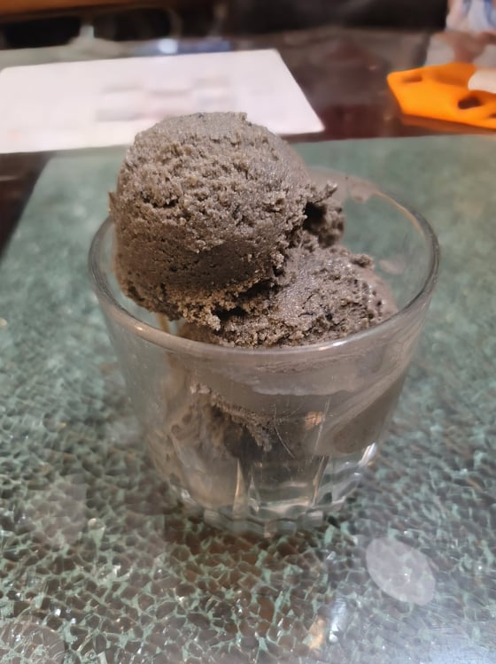

Black Sesame Ice Cream

Ingredients:
- 2 tbsp Black sesame seeds
- 3 tbsp Black sesame paste
- 3 large Egg yolks
- 1/3 cup Sugar
- 2 tbsp Honey
- 1 2/3 cup Milk
- 1 tsp Vanilla extract
- 3/4 cup + 4 tsp Heavy cream
- 1/8 tsp Salt
Instructions:
- In a small pan over medium-low heat, toast the sesame seeds for a few minutes. When they are fragrant and you can hear them popping, remove them from the heat. Move to a mortar and pestle and grind until very fine.
- In a large bowl, whisk together the eggs and sugar. Once homogenous, whisk in the sesame seeds, sesame paste, and honey.
- Heat the milk until just hot, either in the microwave or on the stove. Then slowly whisk into the egg mixture.
- Transfer the mixture to a small pot with a thermostat and place over medium-low heat. Whisk constantly until the temperature reaches 176 degrees Fahrenheit. Then immediately remove from heat and place into an ice-bath.
- Once cooled, whisk in the vanilla.
- In a separate bowl, add in the heavy cream and salt. Mix with an electric mixer until it forms medium to firm peaks. Then gently fold in the milk and sesame mixture and avoid over mixing. Place into a fridge and let chill completely.
- Turn on the ice cream maker and pour in the chilled mixture. It should come to a soft serve consistency in about 40 minutes. Then transfer to a sealable container and place into a freezer to firm up, at least 4 hours to overnight.